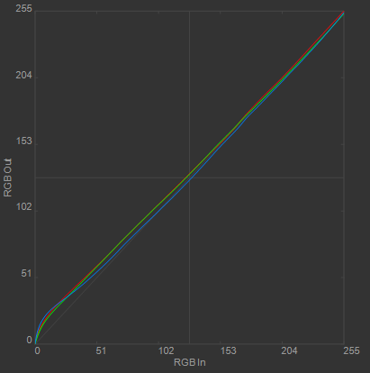
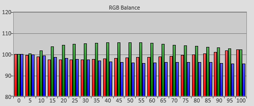
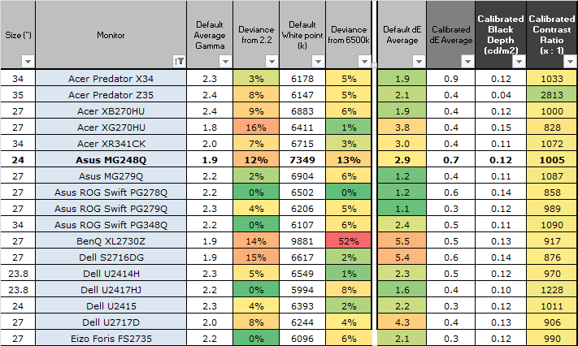

20161012 - Technical Evaluation of Traditional vs New "HDR" Encoding Crossed With Display Capability
Conclusion first. There is no technical justification for using the new HDR signal standards for HDR.
Classic 8-bit/channel or 10-bit/channel Gamma 2.2 output is more than adequate for the full possible current and future range of consumer displays,
and still offers substantial advantages in performance (less bandwidth, less shader cost, no hidden encoding passes) and observed visual quality (no per-display tone-mapper variation).
The best option for a game developer for HDR TV output is to skip the "HDR API" option, and just use the classic non-HDR output.
Remember, the TV's physical contrast ratio doesn't change based on the signal type!
All that is needed to target HDR on HDR TVs with classic non-HDR outputs is to drop Average Picture Level by around 1-stop (as HDR LCD TVs can be 1-stop brighter than classic LDR TVs) by dropping exposure before the existing in-game tone-mapper.
It really is just that easy.
WRGB OLED HDR TV Capability
After changing user display settings to the optimal non-factory choices for best calibration,
and then calibrating a 2015 LG OLED display,
I get the following calibration curve for traditional non-HDR output,

Measured Facts,
(1.) Display pre-calibration has visible grey level color bias which changes based on intensity.
(2.) Display pre-calibration has lower accuracy than a traditional 8-bit/channel signal.
(3.) Darks are significantly out of calibration (many 8-bit steps off).
WRGB OLED dark accuracy issues have been confirmed by external sources like
HDTVTest.co.uk:
"Unfortunately there were more near-black woes on the 55EG920V. According to LG, the above-black handling on its 2015 OLEDs is done at lower than 8-bit gradation, which explains various dark-scene phenomenons ... While careful calibration at the lower end could attenuate some of these issues, the only surefire method to make all these above-black artefacts disappear was – ironically – to lower [Brightness] and crush some shadow detail.".
As of 2016, LG ships it's OLED TVs with default settings which crush shadow detail in an attempt to work around display problems with artifacts in near-black tonality, quoting the
2016 August 10th, LG OLED65E6V 4K HDR TV Review from HDTVTest,
"LG OLED owners probably don’t realise that the default [Brightness] value of '50' crushed some shadow detail in HDR mode. We do have access to a couple of proprietary HDR-mastered patterns that let us verify this, but if you own the 4K Blu-ray disc of The Revenant, go to timecode 00:19:56 (where Hugh is reassuring his son at the campsite) and raise the [Brightness] on your LG OLED TV from '50', and you should be able to see how much shadow detail you were missing before.".
Display panel user settings can also push the TV far out of calibration, quoting the same 2016 August 10th HDTVTest OLED review,
"One word of caution regarding the [Colour Management System] on the LG OLED65E6 – the [Saturation], [Tint] and [Luminance] controls are very potent. From our testing, even one wrong click or two would introduce significant artefacts in the picture, and adjusting one specific colour would paradoxically affect the calibrated greyscale, necessitating multiple calibration runs.".
A core problem with these WRGB OLED based TVs is that they go significantly out of calibration in a matter of X hours of usage. The extent of this can be seen clearly in the HDTVTest pre-calibration RGB Balance graphs,

Quoting the
2016 April 1st, LG OLED65G6P HDR OLED TV Review on HDTVTest,
"Case in point: we originally calibrated one of the units and added some targeted touch-ups at 70% stimulus, only to find that, 60 hours later, the same adjustments that had gained us totally flat grayscale at the time of calibration were no longer ideal.". Also,
"We calibrated several G6s in both the ISF Night and ISF Day modes, and found that with about 200-250 hours run-in time on each unit, the grayscale tracking was consistently red deficient and had a green tint as a result (relative to a totally accurate reference). We witnessed the same inaccuracy on the European Panasonic CZ950/CZ952 OLED (which of course also uses a WRGB panel from LG Display).".
The source of this accuracy problem with OLEDs, quoting the
2016 January Panasonic TX-65CZ952B OLED TV Review from HDTVTest,
"OLEDs do not have inherently good uniformity, so periodically, the electrical current flowing through the pixels must be measured and offset to produce a picture with uniform light distribution.".
HDR LCD With Local Dimming Capability
Facts,
(1.) LCD native contrast ratios without local dimming range around 900:1 to 5000:1 (roughly 10 to 12 stops).
(2.) With a black screen and LED backlight off, contrast ratio is limited by screen reflection and backlight bleed from neighbor dimming zones.
(3.) One LED's local dimming zone spans tens of thousands of pixels.
Grabbing measured numbers from my prior GDC presentation on
Advanced Techniques and Optimization of HDR Color Pipelines,
best case contrast ratio for a best case 1% ambient reflection screen in a 0.05 nit ambient level room (room so dark it is lit only by the screen itself), is roughly 20 stops.
Can use this number to compute an estimate for the observed uniformity error range: 20 stops (LED off) - 12 stops (LED on) = 8 stops.
Practically speaking, the dark accuracy errors introduced by local dimming can range up to 8 stops in an absolute dark room.
To place this in perspective, this error is larger in contrast than what is reproducible on a typical photographic print on paper.
As described by
HDTVTest's review of the Panasonic TX-65DX902B from August 2016,
" ... the dimming algorithm in HDR mode could be too aggressive even with [Automatic Backlight Control] set to the lowest value of 'Min', spoiling the original creative intent of the movie. One such instance was during the opening space sequence in The Martian: the Viera TX-65DX902B was darkening several dark patches excessively, resulting in a blotchy 'reverse clouding' effect. The DX900's sharply-defined backlight algorithm also had a tendency to show up the FALD grid structure of the television. As the title 'The Martian' appeared on the aforementioned space scene, the bright letters were accompanied by square-shaped haloing/blooming against the dark backdrop. The same phenomenon could be observed in timecode 00:19:56 of The Revenant where Hugh is reassuring his son Hawk at night, with the silhouettes being displayed in rectangular halos.".
The only way to get acceptable image quality out of an HDR LCD is to disable local dimming, at which case the HDR LCD is limited on average to a 11-stop contrast ratio.
Signal vs Display Capability
Possible technical arguments for a new "HDR" signal encoding for displays are as follows,
(1.) HDR TVs would require a new signal encoding because traditional signal encoding would not be technically capable of image reproduction without artifacts.
(2.) HDR TVs would have such high contrast ratios and brightness that traditional display relative encoding would not be sufficient.
Lets see if any of these are technically valid,
Claim (1.)
For a classic Gamma 2.2 signal, the contrast ratio of the darkest step to white is the following,
8-bit = 1 / power(1/255, 2.2) to 1 = around 196965:1 (over 17 stops)
10-bit = 1 / power(1/1023, 2.2) to 1 = around 4185298:1 (over 21 stops)
Note prior to HDR displays, there have been true non-dithered 10-bit/channel panels, so an assumption of a 10-bit panel will be used below.
HDR LED back-lit LCDs have consumer power limited peaks for low APL (Average Picture Level) scenes typical of HDR to around 1500 nits or so.
Best case observable contrast for a 1500 nit panel in the darkest 0.05 nit room with black levels only limited only by 1% ambient screen reflection is roughly 21 stops.
So 10-bit Gamma 2.2 can reproduce that contrast ratio just fine.
And if there is still any concern here, just moving to Gamma 2.4 pushes signal contrast ratio peak to roughly 24 stops in that case.
Note the above calculation assumed that the display was actually capable of accurately reproducing those kinds of contrast ratios.
As can been seen from the above sections on measured TV accuracy and error, no TV can come close to accurate reproduction.
Even an 8-bit per channel Gamma 2.2 signal has higher accuracy than either a HDR OLED or HDR LCD has.
The typical argument for PQ HDR encoding boils down to better perceptual distribution of the steps of the signal.
Effectively PQ redistributes steps of the signal to the darks (the area that the HDR OLED TVs by default just clip to zero anyway).
Now many PC panels (like the 300+ nit laptop panel I'm using right now) are actually only 6-bit panels natively.
For a laptop, often the GPU is actually temporally dithering the 8-bit/channel output signal to 6-bit,
and the LCD's relatively slow switching time makes this not perceptual at 60 Hz.
A 1500 nit panel is 5 times brighter than my 6-bit 300 nit laptop,
and 10-bits is 16 times the encoding range.
Point being, temporal dithering more than works for standard Gamma 2.2 encoding to remove any possible perceptual banding
without introducing any visually perceptual noise for HDR displays.
Lets look at this from some numbers,
Step 1 == 1 / power(1/1023, 2.2) = 4185298 : 1 (21.9969 stops)
Step 2 == 1 / power(1/1022, 2.2) = 4176303 : 1 (21.9938 stops)
----
21.9969 stops - 21.9938 stops = 0.003 stops contrast difference
When temporal dithering between step 1 and 2, the change in the signal is only 0.003 stops over a 60th or 144th of a second (depending on display refresh rate).
Well under the ability of a human to perceive any change with a suitable temporal dither pattern,
even if the display could accurately change to exact pixel levels that fast.
So it should be rather clear right now that the claim (1.) is false, and that traditional Gamma 2.2 signals are more than good enough for practical HDR image reproduction.
Claim (2.)
The last argument reduces to a claim that HDR TVs are providing something new in terms of observable contrast ratio.
Specifically that the physically observable contrast ratio difference between HDR TVs will be so different
that the TV must now manually tone-map content to compensate for these differences.
Lets look again at some measured facts, starting with LDR displays,
(1.) Around 1000:1 contrast ratio is typical for PC displays (10 stops).
(2.) Top contrast LDR plasma displays had upwards of 40000:1 contrast (15 stops).
Here are some measured numbers of PC panels from
TFTCentral,

The Plasma TV contrast numbers deserve a detailed tangent.
According to
HT Labs Measurements on a Pioneer Kuro 150fd Plasma HDTV,
the measured white/black windowed pattern contrast ratio was 44160:1 (roughly 15 stops). This translates into what is expected when the display is not doing any global dimming,
as what would be typical with HDR content. The measured contrast ratio with power limited global dimming was 18220:1 (roughly 14 stops).
These really good plasma TVs have 3 stops higher contrast than the best LCD native contrast ratios.
So not counting any viewing environment effects on observed contrast ratio,
a DVD or BluRay movie played back on a classic LDR display had to work across a 5-stop contrast difference without any in-display tone-mapping.
Somehow this worked just fine.
Now enter HDR displays. The
UHD Alliance Ultra HD Premium Cert requirements are over 1000 nits for LCDs and over 540 nits for OLEDs. LED local dimming LCDs have black levels limited by screen reflection when LEDs off, just like OLEDs. The difference being that LED local dimming zones bleed out rectangular artifacts. But for sake of argument we can ignore black level for differences in peak contrast ratio, and focus on peak white level. In that case the average peak HDR display difference is only really around 1 stop (HDR LCDs over one stop above the cert limit don't exist for consumers). Point being HDR displays have smaller contrast variation than traditional non-HDR consumer displays,
and HDR LCDs on average add around 1-stop extra brightness compared to existing bright non-HDR displays.
Now lets return to observable contrast, and properly account for the effects of room ambient level on display black level.
Grabbing numbers from my prior mentioned GDC Presentation where I physically measured ambient level around my house in all the different viewing conditions from day to night:
there is a 15-stop variation in ambient level (which results in a 15-stop variation in observed black level on the display).
This means quite literally if you play a BluRay or DVD movie on the range of classic LDR displays, depending on night/day room conditions and room lighting,
the observed contrast can roughly range between 4-stops for poor reflectance screens in bright conditions, to 15-stops assuming a good plasma display in a ultra dark room.
Also it is easy to take a great LDR plasma display in a dark room and have many stops more contrast than the brightest consumer HDR displays in an afternoon lit room.
So claim (2.) doesn't hold water.
The variation of observable contrast on video playback was massive prior to HDR, and HDR TVs have a perceptually negligible effect on that.
There is no technical justification for needing to switch to an in-display tone-mapper for HDR video playback.
Extra Costs for HDR for Games
Use of the new HDR signals strips way the game developer's ability to control tone-mapping.
This is a show stopper.
For example, all the interesting ideas presented on
c0de517e: Tone Mapping and Local Adaption,
like using game-side knowledge about shadows and lighting to locally adjust tone-mapping per pixel, simply cannot be applied when the display does it's own tone-mapping.
This also opens up the content to even more TV/display-induced artifacts.
Here are some comments from HDTVTest reviews talking about the variation of tone-mapping between HDR TVs,
"the OLED65E6's limited peak brightness also resulted in clipped highlight detail with HDR10 content. We played the skydiving sequence (Chapter 18) from the Ultra HD Blu-ray of Kingsman: The Secret Service split using a HDFury Integral device (kindly loaned by friendly and knowledgeable custom installer Ricky Jennings of Kalibrate Limited) to the 65E6 and other 1000+-nit LED LCDs, and the E6V (screen on the right) blew out the sun’s outline earlier than its LCD-based rivals"
and
"Once we got 4K HDR Ultra HD Blu-ray up and working, we compared the HDR presentation on the LG OLED55E6V side-by-side against a calibrated Panasonic DX900 LED LCD, the most accurate consumer-grade TV so far in terms of PQ EOTF and Rec2020 tracking. And straight away we could see that colours didn’t look right on the OLED: the sandy desert in Mad Max adopted an orangey tint, giving off a cartoony feel (even though some viewers may prefer this richly saturated look); while skin tones in The Martian appeared ruddier than usual even during scenes on Earth. Furthermore, the E6's default [Brightness] setting of '50' crushed a not insignificant amount of shadow detail, requiring a few upward clicks to bring black floor in line with the Panasonic DX9" and
"Unfortunately even our best efforts couldn’t restore the clipping of bright coloured highlights, particularly red-hued ones. On the LG OLED65G6V, the explosions during the storm sequence in Mad Max: Fury Road (timecode 00:28:29) evidently contained less detail than on a rival Ultra HD Premium LED television".
Some HDR signals resort to chroma sub-sampling in order to hit cable bandwidth limits for the HDR signal given resolution and frame rate growth.
Chroma sub-sampling is unacceptable for typical game rendered graphics and game UIs.
The alternative to this will be to return to dithered 8-bit per channel even for some HDR cases.
If HDR support hits desktop, it is likely to take in a 64-bit/pixel tax, doubling bandwidth required to access compared to classic 32-bit/pixel modes.
Also depending on OS/hardware support, there could be hidden full screen passes for pre-display transforms.
A single 4K 64-bit/pixel transform on a 128 GB/s GPU is over 1 ms.
HDR is set to add a large tax on display operations (like compositing or overlay).
Encoding to/from PQ is expensive in VALU cost. Lets look at some code below.
Note as I presented in my GDC Presentation, if a developer attempts to do the PQ transform in a 3D lookup table in combination with color grading,
the accuracy is under 8-bits/channel given any practical 3D texture size.
HDR signals encoded that way would have higher signal error than classic LDR output at a lower bit-depth.
================================================================
GENERAL GAMMA TRANSFORMS
================================================================
CONVERSION
----------
3 LOG (x4) + 3 MUL + 3 EXP (x4) = 27 ops
c = pow(c, immediate);
v_log_f32 v0, v0
v_log_f32 v1, v1
v_log_f32 v2, v2
v_mul_f32 v0, imm, v0
v_mul_f32 v1, imm, v1
v_mul_f32 v2, imm, v2
v_exp_f32 v0, v0
v_exp_f32 v1, v1
v_exp_f32 v2, v2
================================================================
PQ TRANSFORMS
================================================================
PQ FROM LINEAR
--------------
19 + 15 * 4 = 79 operations
// Input {0 to 1}, output {0 to 1}.
float PqFromLinear(float x) {
float m1 = 0.1593017578125;
float m2 = 78.84375;
float c1 = 0.8359375;
float c2 = 18.8515625;
float c3 = 18.6875;
float p = pow( x, m1 );
return pow((c2 * p + c1) / (c3 * p + 1.0), m2); }
v_log_f32 v0, v0 // 000000000028: 7E004300
v_log_f32 v1, v1 // 00000000002C: 7E024301
v_log_f32 v2, v2 // 000000000030: 7E044302
v_mul_f32 v0, 0x3e232000, v0 // 000000000034: 0A0000FF 3E232000
v_mul_f32 v1, 0x3e232000, v1 // 00000000003C: 0A0202FF 3E232000
v_mul_f32 v2, 0x3e232000, v2 // 000000000044: 0A0404FF 3E232000
v_exp_f32 v0, v0 // 00000000004C: 7E004100
v_exp_f32 v1, v1 // 000000000050: 7E024101
v_exp_f32 v2, v2 // 000000000054: 7E044102
v_mov_b32 v3, 0x3f560000 // 000000000058: 7E0602FF 3F560000
s_mov_b32 s0, 0x4196d000 // 000000000060: BE8000FF 4196D000
v_mad_f32 v4, v0, s0, v3 // 000000000068: D1C10004 040C0100
s_mov_b32 s1, 0x41958000 // 000000000070: BE8100FF 41958000
v_mad_f32 v0, v0, s1, 1.0 // 000000000078: D1C10000 03C80300
v_mad_f32 v5, v1, s0, v3 // 000000000080: D1C10005 040C0101
v_mad_f32 v1, v1, s1, 1.0 // 000000000088: D1C10001 03C80301
v_mac_f32 v3, s0, v2 // 000000000090: 2C060400
v_mad_f32 v2, v2, s1, 1.0 // 000000000094: D1C10002 03C80302
v_rcp_f32 v2, v2 // 00000000009C: 7E044502
v_mul_f32 v2, v3, v2 // 0000000000A0: 0A040503
v_log_f32 v2, v2 // 0000000000A4: 7E044302
v_mul_f32 v2, 0x429db000, v2 // 0000000000A8: 0A0404FF 429DB000
v_exp_f32 v2, v2 // 0000000000B0: 7E044102
v_rcp_f32 v0, v0 // 0000000000B4: 7E004500
v_mul_f32 v0, v4, v0 // 0000000000B8: 0A000104
v_rcp_f32 v1, v1 // 0000000000BC: 7E024501
v_mul_f32 v1, v5, v1 // 0000000000C0: 0A020305
v_log_f32 v0, v0 // 0000000000C4: 7E004300
v_log_f32 v1, v1 // 0000000000C8: 7E024301
v_mul_f32 v0, 0x429db000, v0 // 0000000000CC: 0A0000FF 429DB000
v_mul_f32 v1, 0x429db000, v1 // 0000000000D4: 0A0202FF 429DB000
v_exp_f32 v0, v0 // 0000000000DC: 7E004100
v_exp_f32 v1, v1